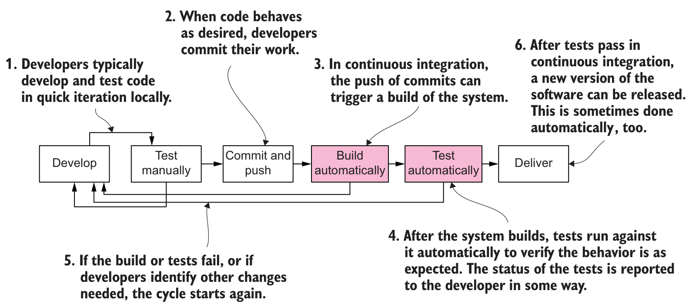
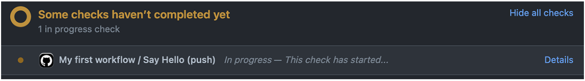
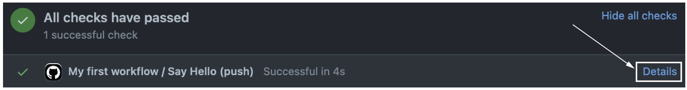
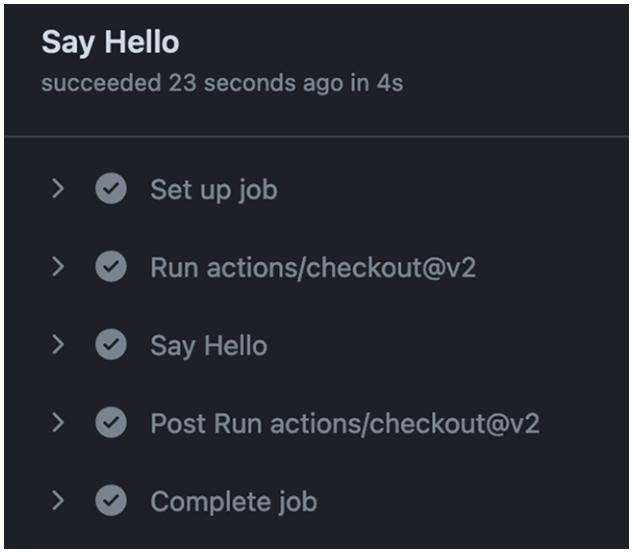
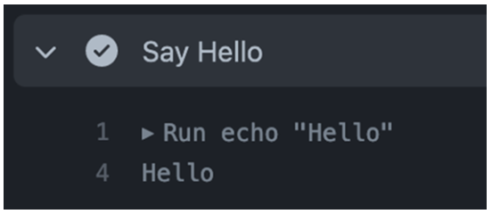
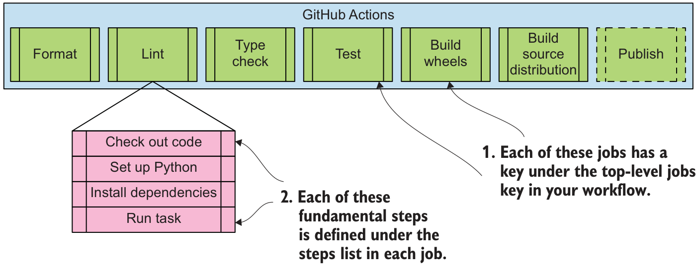
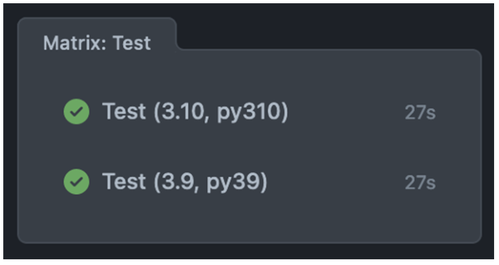

로컬 검사만 남은 상태
인사 함수 greet는 이름을 받아 인사말을 반환한다. greet("Hee")의 기대값은 "Hello, Hee!"다.
개발자가 테스트를 통과한 뒤 반환값을 "Goodbye"로 바꾸고 재검사 없이 제출하면, 과거의 통과 결과는 현재 코드를 보증하지 않는다.
리뷰어는 제출된 변경을 대상으로 검사를 다시 실행한 근거가 필요하다.
선행 지식: 검사 명령과 Git 커밋·push → 신규 학습: 원격 자동 검사와 결과 공유
| 학습 순서 | 기존 지식으로 남는 문제 | 새로 배울 역할 |
|---|---|---|
| ① 실행 구성 | 로컬 검사와 제출한 코드가 다를 수 있다. | 기능 브랜치·PR: 변경 제출 · event: 계기 · workflow: 자동화 정의 · 필터: 실행 조건 |
| ② 실행 준비 | 다른 컴퓨터에서 같은 검사를 어떻게 실행하는가? | runner: 컴퓨터 · job: 작업 · step: 단계 |
| ③ 검사 확대 | 환경 차이·실패 원인을 어떻게 확인하는가? | matrix: 조합 반복 · 로그: 실행 기록 |
| ④ 결과 활용 | 통과한 코드와 파일을 어떻게 전달하는가? | needs: 선행 조건 · artifact: 실행 파일 보관 · Release와의 구분 |
선행 지식은 패키지 빌드, pytest·mypy·Black·flake8 검사, uv 실행과 Git 커밋·push다. 신규 학습은 이 명령을 제출된 변경마다 자동 실행하고 결과를 병합 판단에 연결하는 방법이다.
지속적 통합(CI)은 작은 변경을 자주 합치며 자동 검사로 문제를 일찍 확인하는 개발 방식이다.
인사 함수 greet는 이름을 받아 인사말을 반환한다. greet("Hee")의 기대값은 "Hello, Hee!"다.
개발자가 테스트를 통과한 뒤 반환값을 "Goodbye"로 바꾸고 재검사 없이 제출하면, 과거의 통과 결과는 현재 코드를 보증하지 않는다.
리뷰어는 제출된 변경을 대상으로 검사를 다시 실행한 근거가 필요하다.
GitHub Actions는 저장소의 사건을 계기로 작업을 실행하는 서비스다. CI에서는 변경 제출 → 같은 테스트 실행 → 실패 결과 공유를 맡는다.
같은 입력 "Hee"에 실제값 "Goodbye"가 나오면 비교가 실패한다. 리뷰어도 해당 실행의 결과와 출력을 읽는다.
수동으로 같은 변경을 검사해도 확인할 수 있다. 자동화는 검사 누락을 줄이지만 테스트가 다루지 않는 버그까지 증명하지는 않는다.
성공 기준: 제출된 코드와 검사 결과를 연결한다. 먼저 공통 패키지를 확인하고, 실행 조건과 준비 단계를 설정한다.
왼쪽→오른쪽은 개발·검사·전달 흐름, 아래 되돌림 선은 수정 후 재검사다. 분홍색은 자동 수행 구간이다.

| 그림의 구간 | 역할과 예제 |
|---|---|
| Develop / Test manually | 개발자가 greet 함수를 고치고 로컬에서 확인한다. |
| Commit and push → Build / Test automatically | GitHub에 도착한 변경을 서버가 다시 빌드·검사하고 결과를 돌려준다. |
| 실패 시 되돌아감 / Deliver | 실패 원인을 수정해 다시 제출한다. 전달·공개는 검사 이후의 별도 결정이다. |
교재는 빌드 후 검사한다. 예제는 소스를 먼저 검사하고 배포 파일을 나중에 만든다. wheel 설치 후 동작 검사는 포함하지 않는다.
사용자는 이름으로 인사말을 만든다. 개발자는 이 패키지의 검사 결과와 설치용 wheel을 리뷰어에게 전달한다.
src/hello_open_source/greeting.py
def greet(name: str) -> str:
return f"Hello, {name}!"tests/test_greeting.py · 전체
from hello_open_source.greeting import greet
def test_greet() -> None:
assert greet("Hee") == "Hello, Hee!"src/는 소스, tests/는 테스트, example.py는 호출 예제다. .flake8은 린트 설정이다.
pyproject.toml은 프로젝트·검사 도구 목록, uv.lock은 해결된 버전 기록이다. CI는 이 두 파일로 runner에 같은 환경을 다시 만든다.
시작 상태: 예제 저장소 hello-open-source의 main 브랜치에 위 파일이 커밋되어 GitHub에 올라가 있다.
판정: 저장소 루트에서 uv run --locked pytest -q → 1 passed. 이 로컬 결과를 CI가 제출된 변경마다 다시 확인한다.
CI 설정은 같은 소스를 먼저 검사한 뒤 배포 파일을 만든다. 만든 wheel을 설치해 동작을 확인하는 검사는 포함하지 않는다.
워크플로(workflow)는 실행 조건과 작업을 정한 파일이다. 이벤트(event)는 실행을 시작하는 저장소 사건이다. push는 커밋을 GitHub 브랜치에 올리는 사건, pull_request는 병합 요청(PR)에 관한 사건이다.
.github/workflows/ci.yml · 최소 실행본 전체
name: CI
on: [push, pull_request]
jobs:
tests:
name: Tests
runs-on: ubuntu-latest
steps:
- uses: actions/checkout@v7
- uses: astral-sh/setup-uv@v7
with:
version: "0.8.14"
python-version: "3.12"
- name: Run pytest
run: uv run --locked pytest -qon은 실행 사건을 선택한다. job은 한 실행 컴퓨터의 작업 묶음이고, jobs.tests의 tests는 그 식별자다.
runner는 작업을 수행하는 컴퓨터다. runs-on은 Ubuntu를 선택한다. step은 순서대로 수행할 한 단계이며 steps에 담는다.
action은 재사용 실행 코드다. uses는 checkout·setup-uv action을 호출한다. with는 입력, run은 직접 실행할 명령이다.
코드 가져오기 → uv·Python 선택 → 환경 동기화와 검사 순서다. 정상 출력은 1 passed다. name은 워크플로·작업·단계의 화면 이름이다.
YAML은 들여쓰기로 키의 소속을 나타낸다. 같은 깊이의 하이픈은 steps 목록의 서로 다른 항목이다.
.github/workflows/ci.yml · tests 작업의 준비 부분 발췌
jobs:
tests:
runs-on: ubuntu-latest
steps:
- uses: actions/checkout@v7
- uses: astral-sh/setup-uv@v7
with:
version: "0.8.14"
python-version: "3.12"jobs → tests → steps 순서로 소속을 읽는다. with는 setup-uv의 uses와 같은 목록 항목 안에 있다.
@v7은 action 코드의 버전 참조다. version: "0.8.14"는 설치할 uv, python-version: "3.12"는 실행할 Python을 선택한다.
with를 steps 깊이로 옮기면 action 입력이 아닌 잘못된 job 키가 된다. 명령 실행 전 설정 검증에서 거부되므로 소속을 복원한다.
성공 기준: checkout과 setup-uv는 두 step, version과 python-version은 두 파일이 아닌 한 action의 입력이다. 전체 설정에는 이 준비 단계 뒤에 Run pytest를 둔다.
main은 팀이 공유하는 기준 브랜치다. CI 설정 추가도 기능 브랜치에서 만들고, PR에서 검사 결과를 확인한 뒤 main에 합친다.
브랜치(branch)는 커밋이 이어지는 독립된 작업 줄기다. 예제에는 main과 ci-start가 있다.
기능 브랜치(feature branch)는 변경 하나를 main과 분리해 만드는 브랜치다. ci-start는 ci.yml 추가만 담는다.
PR(Pull Request, 병합 요청)은 한 브랜치의 커밋을 병합 대상 브랜치에 합쳐 달라는 GitHub 요청이다. 변경 차이·검사 결과·리뷰를 한 화면에 모은다.
Git 저장소 루트 · main에서 시작
git switch -c ci-start
git add .github/workflows/ci.yml
git commit -m "Add CI workflow"
git push -u origin ci-startswitch -c는 새 브랜치를 만든 뒤 이동한다. add·commit은 ci.yml만 기록하고, push -u는 GitHub에 ci-start를 만들며 추적 관계를 저장한다. 이때 main은 바뀌지 않는다.
| 단계 | GitHub에서 하는 일 | 상태 변화 |
|---|---|---|
| PR 열기 | Pull requests → New pull request → base: main, compare: ci-start → Create pull request | PR이 생기고 main은 그대로다. |
| PR 갱신 | ci-start에서 새 커밋을 만들어 push | 같은 PR에 커밋이 추가되고 검사가 다시 실행된다. |
| 병합 | 검사 통과 후 Merge pull request | ci-start의 커밋이 main에 들어간다. |
필터(filter)는 조건에 맞는 사건에서만 workflow를 실행하도록 거르는 설정이다. 같은 ci-start 사례로 필터 전후의 실행 횟수를 비교한다.
.github/workflows/ci.yml · on 부분을 아래로 교체
on:
push:
branches: [main]
pull_request:
branches: [main]push.branches: push를 받은 브랜치가 main일 때만 실행한다.
pull_request.branches: PR의 병합 대상(base)이 main일 때만 실행한다. compare 브랜치 이름 ci-start는 따지지 않는다.
pull_request의 기본 활동은 opened(PR 열기)·synchronize(PR 갱신)·reopened(다시 열기)다.
| 사건 | 필터 없음on: [push, pull_request] | 필터 적용branches: [main] |
|---|---|---|
| ci-start push, PR 없음 | push 1회 | 0회 |
| PR 열기 (base main ← compare ci-start) | pull_request 1회 | pull_request 1회 |
| PR 갱신: ci-start에 새 커밋 push | push 1 + pull_request 1 = 2회 | pull_request 1회 |
| 병합: main에 커밋 추가 | push 1회 | push 1회 |
필터 없는 설정은 PR 갱신마다 같은 변경을 두 번 검사한다. 필터 후에도 PR 검사와 병합 후 main 검사는 남는다.
실행 조건을 정한 뒤, 새 runner에 코드와 실행 도구를 준비한다. 성공 기준은 같은 저장소에서 테스트 1개가 수집되는 것이다.
| 준비 단계 | 기본 동작과 다음 사용자 | 누락·변경 시 판정 |
|---|---|---|
| checkout | 제출된 저장소를 runner 작업 폴더에 놓는다. 다음 step이 소스와 설정을 읽는다. | 생략하면 프로젝트 파일이 없다. uv는 원격 소스까지 자동으로 가져오지 않는다. |
| setup-uv | uv를 설치하고 Python 3.12를 선택한다. 뒤의 uv run이 해당 Python을 사용한다. | runner에 우연히 있는 도구·버전에 의존하지 않도록 필요한 실행 환경을 선택한다. |
| uv run pytest -q | 프로젝트 환경을 만들고 의존성을 동기화한 뒤 pytest를 실행한다. 별도 활성화 없이 1 passed. | 가상환경을 수동 생성하지 않았다는 이유만으로 실패하지 않는다. |
예제의 uv run --locked pytest -q는 위 기본 동작에 lock 일치 검사를 더한다. --locked는 불일치 시 실행을 멈추고, -q는 출력만 줄인다.
.venv/는 runner의 실행 환경이다. 저장소의 pyproject.toml·uv.lock이 다음 실행의 준비 근거다. runner가 달라져도 두 기록을 가져온다.
status check는 특정 변경의 검사 상태·결과다. 위는 진행 중, 아래는 성공 표시이며 실제 실행 여부도 확인한다.


| 상태·결과 | 판정 | 확인할 근거 |
|---|---|---|
| 진행 중 | 아직 통과 판단 불가 | 완료 후 결과 확인 |
| 성공 | 실행한 명령의 성공 여부 확인 | 올바른 커밋·예상한 검사·step 로그 |
| 실패 / 취소 | 오류 발생 / 실행이 중단됨 | 실패 명령 / 취소 사유 |
| 건너뜀 | 실행하지 않은 검사는 근거가 없음 | 조건 확인; job 건너뜀은 성공으로 보고될 수 있음 |
교재의 Say Hello는 job 표시 이름이다. 예제의 Tests·Quality로 대응한다. 초록 표시만으로 검사가 실제 실행되었다고 단정하지 않는다.
로그는 실행 과정과 명령 출력의 기록이다. 실패 결과를 확인한 뒤 실행 → job → step → 출력 순서로 원인을 좁힌다.


위 그림의 Set up job은 실행 준비, Run actions/checkout@v2는 코드 준비, Say Hello는 사용자 단계다. Post Run…·Complete job은 정리 단계다. checkout 버전은 교재 화면이며 예제는 v7이다.
아래 그림의 echo "Hello"는 문자열을 출력하고 결과로 Hello를 남긴다. 같은 방식으로 Run pytest를 열면 테스트 실패 줄을 읽을 수 있다.
환경 준비 실패면 설치·버전을, 테스트 실패면 기대값·실제값을 확인한다. 실행 상태만 보고 코드를 추측해 고치지 않는다.
동일 검사 assert greet("Hee") == "Hello, Hee!"를 고정하고 반환값만 변경한다. 결과는 로컬 실측이다.
src/hello_open_source/greeting.py · 잘못된 변경
def greet(name: str) -> str:
return "Goodbye"uv run --locked pytest -q · 핵심 출력
E AssertionError: assert 'Goodbye' == 'Hello, Hee!'
1 failed기대값은 인사말인데 실제값이 다르다. 테스트 명령은 종료 코드 1로 끝난다.
같은 파일 · 반환값 복원
def greet(name: str) -> str:
return f"Hello, {name}!"같은 명령으로 재검사
1 passed종료 코드 0은 명령 성공이다. 기본 설정에서는 step 실패가 job 실패로 이어지고 뒤의 일반 step은 건너뛴다.
코드 오류는 복원한 새 커밋을 ci-start에 push해 PR을 갱신하고 새 실행으로 확인한다. 같은 실행의 재실행은 원래 코드·참조를 사용하며, 일시적 다운로드 실패 재시도에 쓸 수 있다.
기능 검사를 준비한 뒤 품질 검사를 추가한다. tests와 quality는 보완 관계이며, 한쪽 통과가 다른 쪽 통과를 뜻하지 않는다.
.github/workflows/ci.yml · jobs.quality.steps 검사 부분
- name: Check formatting
run: uv run --locked black --check src tests example.py
- name: Check lint
run: uv run --locked flake8 src tests example.py
- name: Check types
run: uv run --locked mypy src tests example.pyquality에도 runner·checkout·setup-uv를 둔다. tests의 설치 환경을 이어받지 않는다.
greeting.py · 함수 안의 return 뒤 공백만 2개로 변경
return f"Hello, {name}!"로컬에서 각 명령을 따로 실행한 결과다.
pytest: 1 passed.
Black: 포맷 변경 필요, 종료 1.
flake8: E271(키워드 뒤 여러 공백).
mypy: 타입 오류 없음.
Black 기본 명령은 파일을 고친다. --check는 파일을 유지하며 수정 필요 여부만 보고한다. 공백 1개로 복원하면 세 품질 검사도 통과한다.
상단의 초록 상자는 job, 아래 분홍 상자는 한 job 안의 step이다. 선은 포함 관계를 가리킨다.

tests와 quality는 의존 관계가 없어 자원이 배정되면 병렬 실행할 수 있다. 각자 코드를 가져오고 환경을 준비한다. 하나의 job에 묶을 때보다 결과를 따로 확인할 수 있지만 준비 비용도 반복된다.
checkout → setup-uv → 검사 순서다. 그림의 Check out code·Set up Python·Install dependencies·Run task는 코드 준비·Python 준비·의존성 설치·명령 실행이다. 파일은 같은 job의 다음 step에서 이어 쓴다.
교재의 Format·Lint·Type check는 표기·규칙·타입 검사, Test는 테스트다. Build wheels·Build source distribution은 배포물 생성, Publish는 공개이며 여기서는 공개를 구성하지 않는다.
단일 환경의 통과는 다른 환경의 근거가 없다. matrix는 같은 검사를 조합마다 반복한다. OS는 운영체제이고 표 한 칸이 tests 작업 하나다.
.github/workflows/ci.yml · jobs.tests의 키
runs-on: ${{ matrix.os }}
strategy:
matrix:
os: [ubuntu-latest, windows-latest]
python: ["3.11", "3.12"]같은 tests.steps · setup-uv의 with 내부 키
python-version: ${{ matrix.python }}${{ … }}는 설정에 값을 넣는 표현식이다. 한 조합의 matrix.os는 runner, matrix.python은 Python 선택에 연결된다.
| OS / Python | 3.11 | 3.12 |
|---|---|---|
| Ubuntu | ① Ubuntu·3.11 | ② Ubuntu·3.12 |
| Windows | ③ Windows·3.11 | ④ Windows·3.12 |
Ubuntu·3.11이면 ubuntu-latest와 "3.11"을 전달한다. 같은 코드·검사를 2 × 2 = 4개 작업에서 실행한다.

교재의 Test (3.10, py310)·Test (3.9, py39)의 py310·py39는 교재의 실행 환경 이름이고 초록 체크는 성공이다. 예제는 OS까지 네 조합이다. 이 그림은 예제 네 조합의 실측 결과가 아니다.
fail-fast는 한 조합의 실패가 나머지 matrix 작업을 중단시키는지 정한다. 기본값은 true다.
.github/workflows/ci.yml · jobs.tests 안의 strategy
strategy:
fail-fast: false
matrix:
os: [ubuntu-latest, windows-latest]
python: ["3.11", "3.12"]검사를 성공으로 바꾸는 옵션이 아니다. 다른 조합을 취소하지 않아 결과를 더 수집한다.
조건: Windows·3.11이 먼저 실패하고, 나머지 세 작업은 아직 대기 중이다. 아래는 공식 동작에 따른 판정 예다.
| 설정 | Windows·3.11 | 남은 세 조합 |
|---|---|---|
| 기본 true | 실패 | 취소 대상 → 검사 근거 없음 |
| false | 실패 유지 | 계속 실행 → 각각 성공/실패 확인 |
실행 중이거나 이미 끝난 작업은 시점에 따라 결과가 달라질 수 있다. Windows에서 실제 오류를 관측한 사례는 아니다.
검사를 병렬 실행한 뒤 배포 파일 생성으로 넘어간다. needs는 선행 작업의 성공을 요구한다. 화살표는 파일 이동이 아닌 실행 허가 조건이다.
.github/workflows/ci.yml · jobs.build의 앞부분
build:
name: Build package
needs: [tests, quality]
runs-on: ubuntu-latesttests 네 조합과 quality가 모두 성공 → build 실행. 선행 작업 실패 → 기본적으로 build 건너뜀.
needs는 표시 이름이 아닌 jobs 아래 식별자 tests·quality를 참조한다. 파일 자체는 전달하지 않으므로 build도 checkout부터 시작한다.
needs가 없으면 build는 검사 완료를 기다리지 않는다. 지정한 뒤에는 모두 성공해야 실행한다. 성공 경로의 합계는 tests 4 + quality 1 + build 1 = 6개다.
빌드는 배포 파일 생성, artifact는 workflow 실행에서 만든 파일을 그 실행에 보관한 것이다. runner는 job 종료 뒤 사라지므로 빌드 직후 업로드한다.
.github/workflows/ci.yml · build.steps의 준비 뒤 두 단계
- name: Build distributions
run: uv build
- name: Save distributions
uses: actions/upload-artifact@v7
with:
name: hello-open-source-dist
path: dist/*
if-no-files-found: error저장소 루트의 dist/ · 로컬에서 확인한 생성 파일
hello_open_source-0.1.0.tar.gz
hello_open_source-0.1.0-py3-none-any.whlbuild도 checkout·setup-uv로 준비한다. uv build는 소스 배포물(.tar.gz)과 설치용 wheel(.whl)을 만든다. name은 보관 이름, path: dist/*는 작업 폴더 /home/runner/work/hello-open-source/hello-open-source/의 dist/ 안 모든 파일이다.
if-no-files-found는 path에 맞는 파일이 하나도 없을 때 업로드 step의 결과를 정하는 입력이다. 예: path를 dists/*로 잘못 쓴 경우다.
| 값 | 파일 0개일 때 | 결과의 의미 |
|---|---|---|
warn (기본) | 경고 후 성공 | 초록 표시인데 받을 파일이 없다. |
error | 오류로 step 실패 | job 실패로 경로 문제가 드러난다. |
ignore | 출력 없이 성공 | 경고조차 남지 않는다. |
예제는 error를 써서 Build package의 성공이 배포 파일 보관까지 뜻하게 한다.
upload-artifact로 보관한 파일은 GitHub Releases에 올라가지 않는다. 둘은 보관 대상과 받는 사람이 다르다.
| 비교 기준 | artifact · hello-open-source-dist | Release · 예: v0.1.0 |
|---|---|---|
| 정의 | workflow 실행 중 만든 파일을 그 실행에 붙여 보관한다. | Git 태그(커밋에 붙인 버전 이름)에 연결한 배포 페이지다. 설명과 첨부 파일을 담는다. |
| 만드는 방법 | build job의 upload-artifact step이 실행마다 자동으로 만든다. | 공개할 버전을 정한 뒤 Releases → Draft a new release에서 태그·제목·파일을 지정해 게시한다. |
| 받는 위치 | Actions → CI 실행 → Artifacts에서 ZIP 하나로 받는다. 안에 tar.gz·whl이 있다. | 저장소 Releases 페이지의 Assets에서 파일별로 받는다. |
| 보관 | 기본 90일 뒤 삭제되고, 실행을 지우면 함께 지워진다. | 보관 기한이 없다. 쓰기 권한자가 수정·삭제한다. |
| 선택 조건 | 리뷰어·팀원이 검사한 커밋의 배포 파일을 확인할 때 | 패키지 사용자가 정해진 버전의 배포 파일을 받을 때 |
선후 관계다. artifact로 검사한 커밋의 파일을 확인한 뒤, 공개할 버전을 정하면 Release에 파일을 첨부한다. 이 workflow는 Release를 만들지 않으며, Release 생성 자동화와 PyPI 공개는 별도 배포 절차다.
Release에 GitHub가 자동으로 붙이는 Source code(zip·tar.gz)는 태그 시점 저장소 내용의 압축이다. uv build가 만든 hello_open_source-0.1.0.tar.gz와 다른 파일이다.
로컬의 검사 명령을 유지하면서, 제출된 변경의 검사와 결과 공유를 자동화한다.
| 개념 | 역할 | 핵심 판정 |
|---|---|---|
| 기능 브랜치 · PR | main과 분리한 변경을 검사·검토 뒤 병합 요청 | 검사 결과를 본 뒤 main에 합치는가? |
| event · workflow · 필터 | 언제 어떤 작업을 시작할지 정의 | 현재 사건이 실행 조건에 맞는가? |
| runner · job · step | 실행 환경과 작업의 내부 순서 구성 | 소스·환경 준비 뒤 검사를 실행하는가? |
| matrix · needs | 조합별 반복과 작업 간 선행 조건 | 필요한 환경이 모두 검증되었는가? |
| 로그 · status check | 원인과 결과를 특정 실행에 연결 | 실패 원인과 검사한 커밋이 일치하는가? |
| artifact · Release | 실행 결과 파일 보관과 버전별 공개 배포 | 파일이 남았고, 받을 사람에게 맞는 위치인가? |
자동 검사는 지정한 범위를 검증한다. 요구사항·설계 판단은 사람이 검토하고, 공개·배포는 별도 절차로 결정한다.